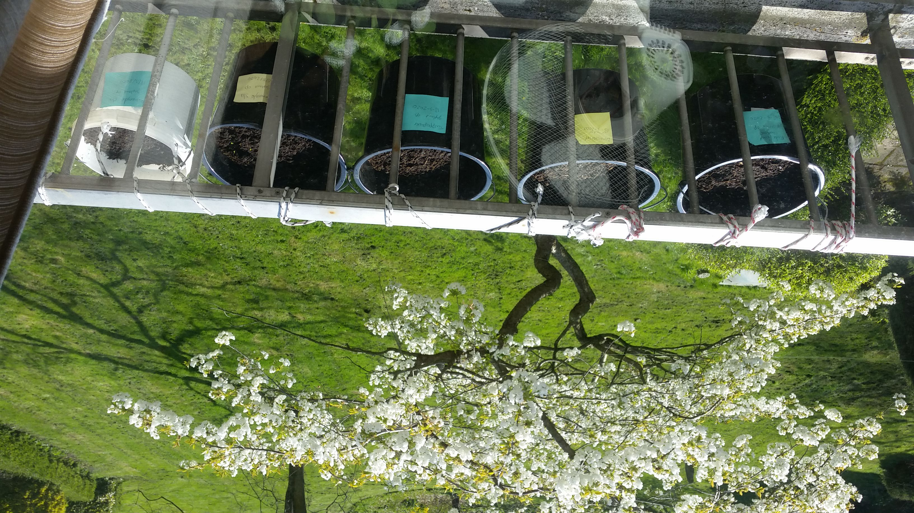
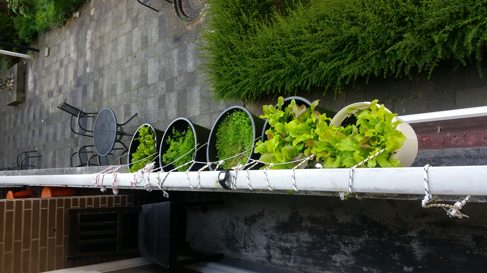
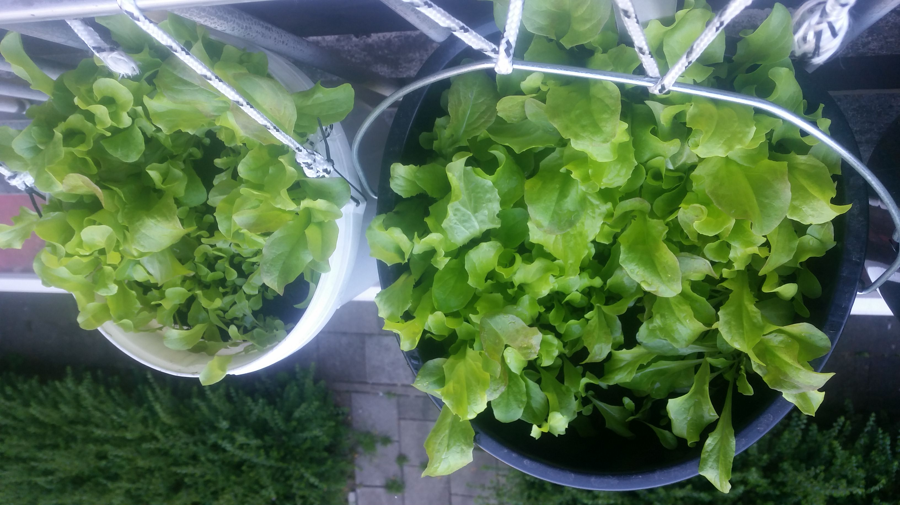
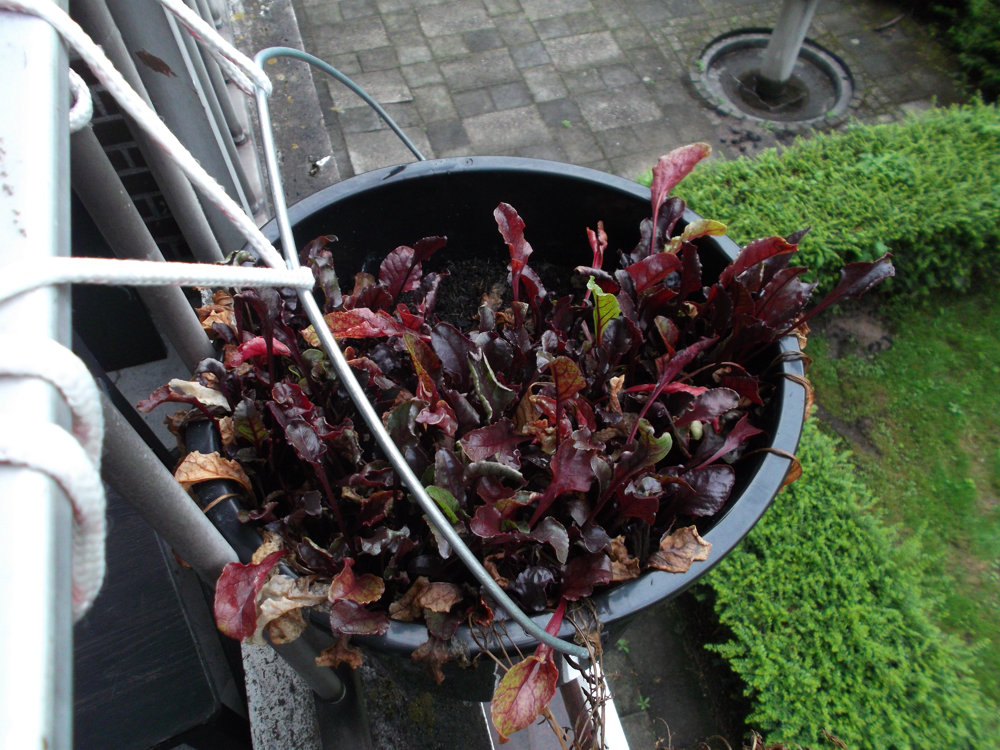
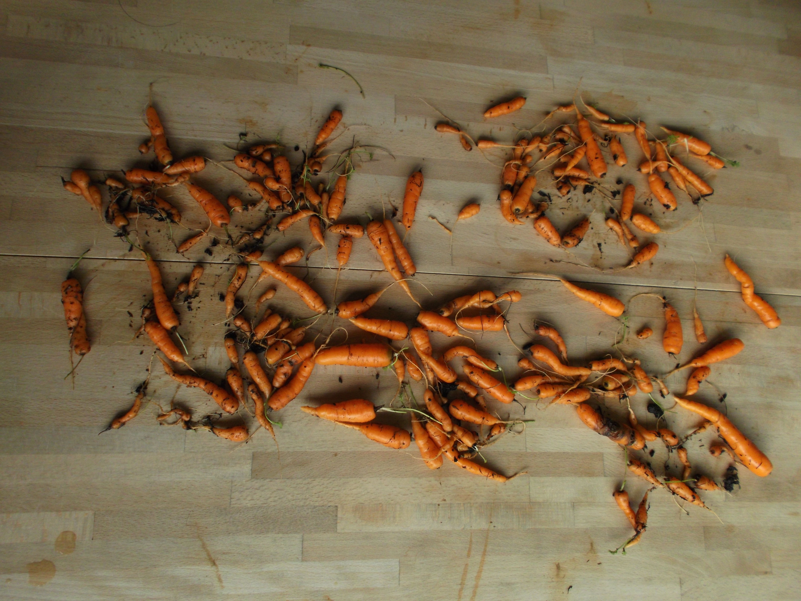
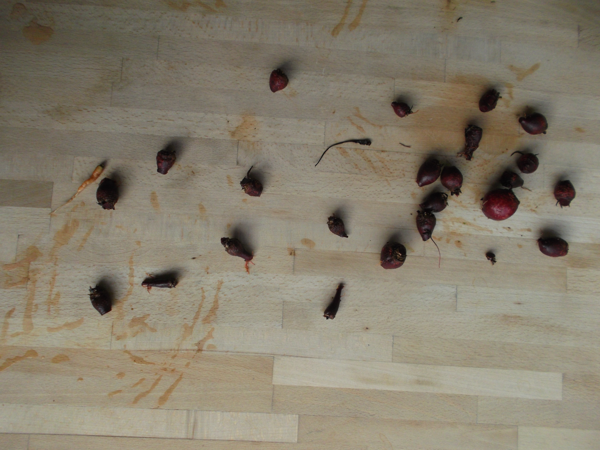
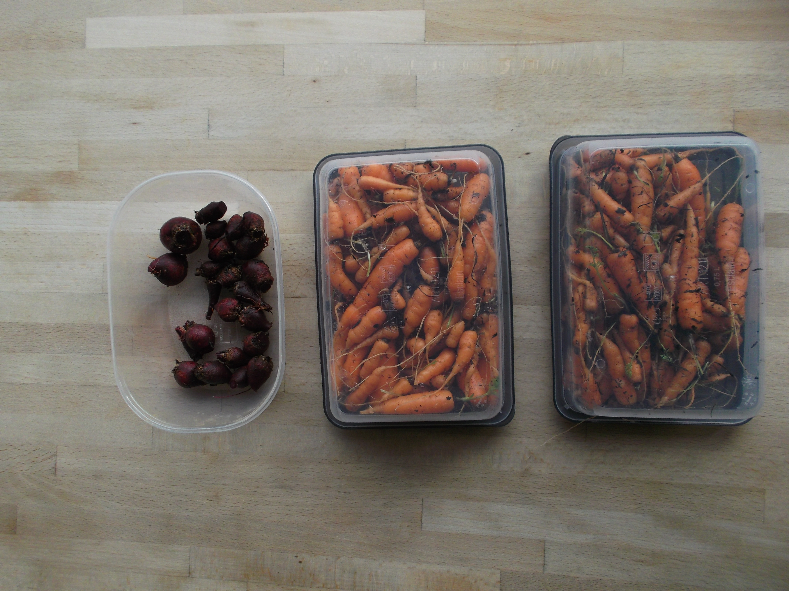

Around March 2020, when the government in the Netherlands decided that we should stay inside to stop the spread of the corona-virus, I was quite lost. Lots of social activities could not take place, I had to follow university courses from home and my whole day lost its structure. I wanted something to hold onto and create something positive to work on instead of being depressed by all the horrible news around me.
At the time, I was thinking about starting a micro-farm on my balcony by purchasing buckets, garden soil and vegetable seeds, filling the buckets with soil and planting the seeds in the soil. I kept putting it off because I had plenty of other things to do, but once the quarantine struck I had loads of time.
I decided to plant a seed of hope in a time of despair. Thus, The Micro-Farm was born.
I planted Carrots, Beets and Cabbage and some red flowers. Around the end of August I harvested, and I was surprised by the big amount of vegetables that came out of my buckets!
These plants helped me tremendously during the quarantine, since they gave me a reason to get out of bed every morning: The plants needed water. Also, it was exciting to watch the plants grow and to have something to look forward to, something that will continue regardless of any quarantine-like measures.
I just planted some Radish seeds and I'm intending on continuing this micro-food production facility. It gives a lot of satisfaction and connection to nature. I can only look at these plants and be thankful for how beautiful they have been created by God. He really knew what He was doing.
Check out the pictures and see for yourself!
      